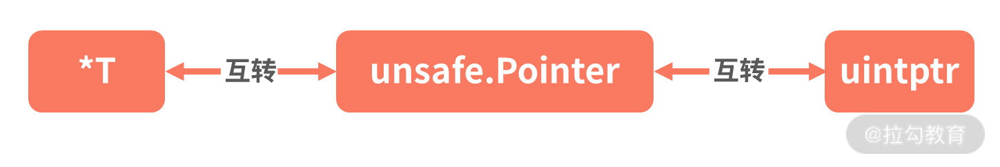

- 00 开篇词 Go 为开发者的需求设计，带你实现高效工作.md.html
- 01 基础入门：编写你的第一个 Go 语言程序.md.html
- 02 数据类型：你必须掌握的数据类型有哪些？.md.html
- 03 控制结构：if、for、switch 逻辑语句的那些事儿.md.html
- 04 集合类型：如何正确使用 array、slice 和 map？.md.html
- 05 函数和方法：Go 语言中的函数和方法到底有什么不同？.md.html
- 06 struct 和 interface：结构体与接口都实现了哪些功能？.md.html
- 07 错误处理：如何通过 error、deferred、panic 等处理错误？.md.html
- 08 并发基础：Goroutines 和 Channels 的声明与使用.md.html
- 09 同步原语：sync 包让你对并发控制得心应手.md.html
- 10 Context：你必须掌握的多线程并发控制神器.md.html
- 11 并发模式：Go 语言中即学即用的高效并发模式.md.html
- 12 指针详解：在什么情况下应该使用指针？.md.html
- 13 参数传递：值、引用及指针之间的区别？.md.html
- 14 内存分配：new 还是 make？什么情况下该用谁？.md.html
- 15 运行时反射：字符串和结构体之间如何转换？.md.html
- 16 非类型安全：让你既爱又恨的 unsafe.md.html
- 17 SliceHeader：slice 如何高效处理数据？.md.html
- 18 质量保证：Go 语言如何通过测试保证质量？.md.html
- 19 性能优化：Go 语言如何进行代码检查和优化？.md.html
- 20 协作开发：模块化管理为什么能够提升研发效能？.md.html
- 21 网络编程：Go 语言如何玩转 RESTful API 服务？.md.html
- 22 网络编程：Go 语言如何通过 RPC 实现跨平台服务？.md.html
- 23 结束语 你的 Go 语言成长之路.md.html
16 非类型安全：让你既爱又恨的 unsafe
上节课我留了一个小作业，让你练习一下如何使用反射调用一个方法，下面我来进行讲解。
还是以 person 这个结构体类型为例。我为它增加一个方法 Print，功能是打印一段文本，示例代码如下：
func (p person) Print(prefix string){
fmt.Printf("%s:Name is %s,Age is %d\n",prefix,p.Name,p.Age)
}
然后就可以通过反射调用 Print 方法了，示例代码如下：
func main() {
p:=person{Name: "飞雪无情",Age: 20}
pv:=reflect.ValueOf(p)
//反射调用person的Print方法
mPrint:=pv.MethodByName("Print")
args:=[]reflect.Value{reflect.ValueOf("登录")}
mPrint.Call(args)
}
从示例中可以看到，要想通过反射调用一个方法，首先要通过 MethodByName 方法找到相应的方法。因为 Print 方法需要参数，所以需要声明参数，它的类型是 []reflect.Value，也就是示例中的 args 变量，最后就可以通过 Call 方法反射调用 Print 方法了。其中记得要把 args 作为参数传递给 Call 方法。
运行以上代码，可以看到如下结果：
登录:Name is 飞雪无情,Age is 20
从打印的结果可以看到，和我们直接调用 Print 方法是一样的结果，这也证明了通过反射调用 Print 方法是可行的。
下面我们继续深入 Go 的世界，这节课会介绍 Go 语言自带的 unsafe 包的高级用法。
顾名思义，unsafe 是不安全的。Go 将其定义为这个包名，也是为了让我们尽可能地不使用它。不过虽然不安全，它也有优势，那就是可以绕过 Go 的内存安全机制，直接对内存进行读写。所以有时候出于性能需要，还是会冒险使用它来对内存进行操作。
指针类型转换
Go 的设计者为了编写方便、提高效率且降低复杂度，将其设计成一门强类型的静态语言。强类型意味着一旦定义了，类型就不能改变；静态意味着类型检查在运行前就做了。同时出于安全考虑，Go 语言是不允许两个指针类型进行转换的。
我们一般使用 *T 作为一个指针类型，表示一个指向类型 T 变量的指针。为了安全的考虑，两个不同的指针类型不能相互转换，比如 *int 不能转为 *float64。
我们来看下面的代码：
func main() {
i:= 10
ip:=&i
var fp *float64 = (*float64)(ip)
fmt.Println(fp)
}
这个代码在编译的时候，会提示 cannot convert ip (type * int) to type * float64，也就是不能进行强制转型。那如果还是需要转换呢？这就需要使用 unsafe 包里的 Pointer 了。下面我先为你介绍 unsafe.Pointer 是什么，然后再介绍如何转换。
unsafe.Pointer
unsafe.Pointer 是一种特殊意义的指针，可以表示任意类型的地址，类似 C 语言里的 void* 指针，是全能型的。
正常情况下，*int 无法转换为 *float64，但是通过 unsafe.Pointer 做中转就可以了。在下面的示例中，我通过 unsafe.Pointer 把 *int 转换为 *float64，并且对新的 *float64 进行 3 倍的乘法操作，你会发现原来变量 i 的值也被改变了，变为 30。
ch16/main.go
func main() {
i:= 10
ip:=&i
var fp *float64 = (*float64)(unsafe.Pointer(ip))
*fp = *fp * 3
fmt.Println(i)
}
这个例子没有任何实际意义，但是说明了通过 unsafe.Pointer 这个万能的指针，我们可以在 *T 之间做任何转换。那么 unsafe.Pointer 到底是什么？为什么其他类型的指针可以转换为 unsafe.Pointer 呢？这就要看 unsafe.Pointer 的源代码定义了，如下所示：
// ArbitraryType is here for the purposes of documentation
// only and is not actually part of the unsafe package.
// It represents the type of an arbitrary Go expression.
type ArbitraryType int
type Pointer *ArbitraryType
按 Go 语言官方的注释，ArbitraryType 可以表示任何类型（这里的 ArbitraryType 仅仅是文档需要，不用太关注它本身，只要记住可以表示任何类型即可）。 而 unsafe.Pointer 又是 *ArbitraryType，也就是说 unsafe.Pointer 是任何类型的指针，也就是一个通用型的指针，足以表示任何内存地址。
uintptr 指针类型
uintptr 也是一种指针类型，它足够大，可以表示任何指针。它的类型定义如下所示：
// uintptr is an integer type that is large enough
// to hold the bit pattern of any pointer.
type uintptr uintptr
既然已经有了 unsafe.Pointer，为什么还要设计 uintptr 类型呢？这是因为 unsafe.Pointer 不能进行运算，比如不支持 +（加号）运算符操作，但是 uintptr 可以。通过它，可以对指针偏移进行计算，这样就可以访问特定的内存，达到对特定内存读写的目的，这是真正内存级别的操作。
在下面的代码中，我以通过指针偏移修改 struct 结构体内的字段为例，演示 uintptr 的用法。
func main() {
p :=new(person)
//Name是person的第一个字段不用偏移，即可通过指针修改
pName:=(*string)(unsafe.Pointer(p))
*pName="飞雪无情"
//Age并不是person的第一个字段，所以需要进行偏移，这样才能正确定位到Age字段这块内存，才可以正确的修改
pAge:=(*int)(unsafe.Pointer(uintptr(unsafe.Pointer(p))+unsafe.Offsetof(p.Age)))
*pAge = 20
fmt.Println(*p)
}
type person struct {
Name string
Age int
}
这个示例不是通过直接访问相应字段的方式对 person 结构体字段赋值，而是通过指针偏移找到相应的内存，然后对内存操作进行赋值。
下面我详细介绍操作步骤。
- 先使用 new 函数声明一个 *person 类型的指针变量 p。
- 然后把 *person 类型的指针变量 p 通过 unsafe.Pointer，转换为 *string 类型的指针变量 pName。
- 因为 person 这个结构体的第一个字段就是 string 类型的 Name，所以 pName 这个指针就指向 Name 字段（偏移为 0），对 pName 进行修改其实就是修改字段 Name 的值。
- 因为 Age 字段不是 person 的第一个字段，要修改它必须要进行指针偏移运算。所以需要先把指针变量 p 通过 unsafe.Pointer 转换为 uintptr，这样才能进行地址运算。既然要进行指针偏移，那么要偏移多少呢？这个偏移量可以通过函数 unsafe.Offsetof 计算出来，该函数返回的是一个 uintptr 类型的偏移量，有了这个偏移量就可以通过 + 号运算符获得正确的 Age 字段的内存地址了，也就是通过 unsafe.Pointer 转换后的 *int 类型的指针变量 pAge。
- 然后需要注意的是，如果要进行指针运算，要先通过 unsafe.Pointer 转换为 uintptr 类型的指针。指针运算完毕后，还要通过 unsafe.Pointer 转换为真实的指针类型（比如示例中的 *int 类型），这样可以对这块内存进行赋值或取值操作。
- 有了指向字段 Age 的指针变量 pAge，就可以对其进行赋值操作，修改字段 Age 的值了。
运行以上示例，你可以看到如下结果：
{飞雪无情 20}
这个示例主要是为了讲解 uintptr 指针运算，所以一个结构体字段的赋值才会写得这么复杂，如果按照正常的编码，以上示例代码会和下面的代码结果一样。
func main() {
p :=new(person)
p.Name = "飞雪无情"
p.Age = 20
fmt.Println(*p)
}
指针运算的核心在于它操作的是一个个内存地址，通过内存地址的增减，就可以指向一块块不同的内存并对其进行操作，而且不必知道这块内存被起了什么名字（变量名）。
指针转换规则
你已经知道 Go 语言中存在三种类型的指针，它们分别是：常用的 *T、unsafe.Pointer 及 uintptr。通过以上示例讲解，可以总结出这三者的转换规则：
- 任何类型的 *T 都可以转换为 unsafe.Pointer；
- unsafe.Pointer 也可以转换为任何类型的 *T；
- unsafe.Pointer 可以转换为 uintptr；
- uintptr 也可以转换为 unsafe.Pointer。

(指针转换示意图)
可以发现，unsafe.Pointer 主要用于指针类型的转换，而且是各个指针类型转换的桥梁。uintptr 主要用于指针运算，尤其是通过偏移量定位不同的内存。
unsafe.Sizeof
Sizeof 函数可以返回一个类型所占用的内存大小，这个大小只与类型有关，和类型对应的变量存储的内容大小无关，比如 bool 型占用一个字节、int8 也占用一个字节。
通过 Sizeof 函数你可以查看任何类型（比如字符串、切片、整型）占用的内存大小，示例代码如下：
fmt.Println(unsafe.Sizeof(true))
fmt.Println(unsafe.Sizeof(int8(0)))
fmt.Println(unsafe.Sizeof(int16(10)))
fmt.Println(unsafe.Sizeof(int32(10000000)))
fmt.Println(unsafe.Sizeof(int64(10000000000000)))
fmt.Println(unsafe.Sizeof(int(10000000000000000)))
fmt.Println(unsafe.Sizeof(string("飞雪无情")))
fmt.Println(unsafe.Sizeof([]string{"飞雪u无情","张三"}))
对于整型来说，占用的字节数意味着这个类型存储数字范围的大小，比如 int8 占用一个字节，也就是 8bit，所以它可以存储的大小范围是 -128~~127，也就是 −2^(n-1) 到 2^(n-1)−1。其中 n 表示 bit，int8 表示 8bit，int16 表示 16bit，以此类推。
对于和平台有关的 int 类型，要看平台是 32 位还是 64 位，会取最大的。比如我自己测试以上输出，会发现 int 和 int64 的大小是一样的，因为我用的是 64 位平台的电脑。
小提示：一个 struct 结构体的内存占用大小，等于它包含的字段类型内存占用大小之和。
总结
unsafe 包里最常用的就是 Pointer 指针，通过它可以让你在 *T、uintptr 及 Pointer 三者间转换，从而实现自己的需求，比如零内存拷贝或通过 uintptr 进行指针运算，这些都可以提高程序效率。
unsafe 包里的功能虽然不安全，但的确很香，比如指针运算、类型转换等，都可以帮助我们提高性能。不过我还是建议尽可能地不使用，因为它可以绕开 Go 语言编译器的检查，可能会因为你的操作失误而出现问题。当然如果是需要提高性能的必要操作，还是可以使用，比如 []byte 转 string，就可以通过 unsafe.Pointer 实现零内存拷贝，下节课我会详细讲解。 unsafe 包还有一个函数我这节课没有讲，它是 Alignof，功能就是函数名字字面的意思，比较简单，你可以自己练习使用一下，这也是这节课的思考题。记得来听下节课哦！